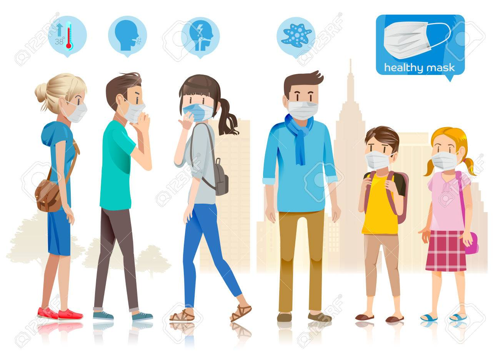
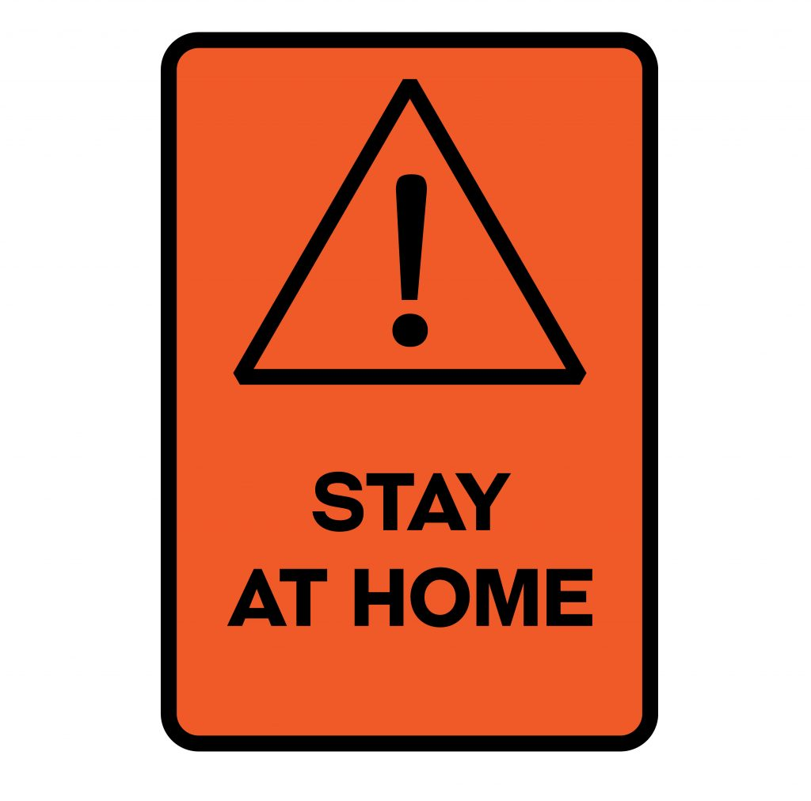
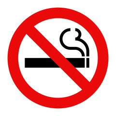
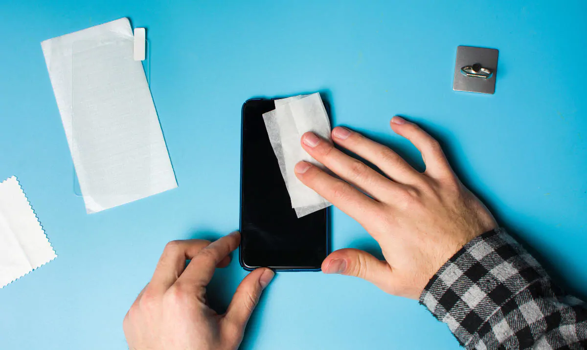
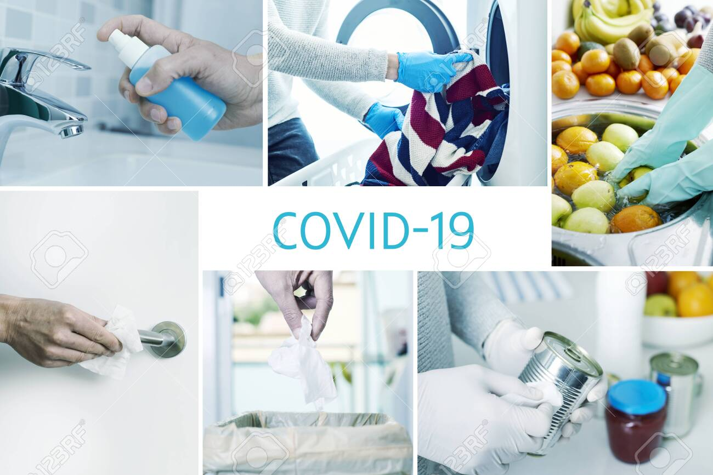
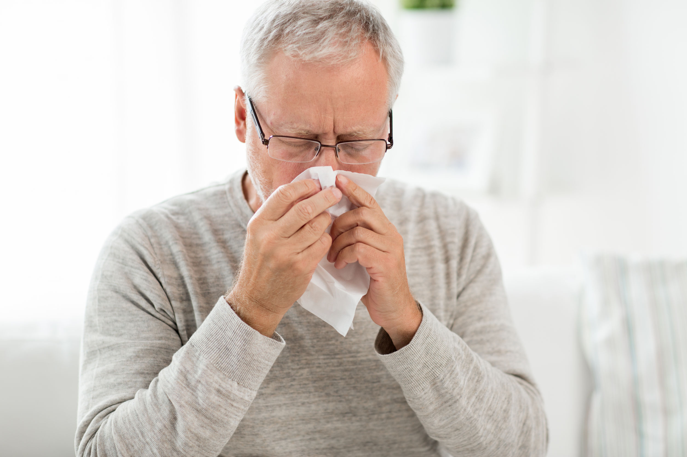

Public Hygiene is Important :
Social Practices :
- Wear mask while in public places.(like market, etc)
- Maintain at least 2 metre (6 feet) distance between you and people.
- Practice social distancing by avoiding unnecessary travel and staying away from large group of people.
- Don't go out if you are feeling sick or have any cold or flu symptoms and have proper examination and treatment.



Why not to Smoke?
- If you smoke, you may already have lung problems. They make you more likely to get very sick from COVID-19 as the coronavirus attacks your lungs.
- When smokers’ lungs are exposed to flu or other infections that affect their airways, they can get much sicker than nonsmokers. If your lungs are already damaged, they may not be able to provide you with enough oxygen or to use oxygen the way they should. Damage to the cilia in your lungs can also make it harder for them to clear out things like mucus.
- Smokers are more likely to get serious lung conditions such as pneumonia. They're also at higher risk of a complication called acute respiratory distress syndrome (ARDS), in which fluid builds up in the tiny air sacs in your lungs. This means your lungs can't fill with enough air. Less oxygen gets to your bloodstream and organs. This can lead to organ damage or even death.
- Hence, refrain from smoking and vaping which weaken your lungs.


Cleanliness is Important:
- You can also catch the SARS-CoV-2 virus if you touch a surface or object that has the virus on it and then touch your mouth, nose, or eye.
- Clean any objects that you touch a lot (like phones, utensils, doorknob).
- The coronavirus can live for hours to days on surfaces like countertops and doorknobs. How long it survives depends on the material the surface is made from.
- To reduce your chance of catching or spreading the new coronavirus, clean and disinfect common surfaces and objects in your home and office every day.

Note : Do not clean your phone using Hand Sanitizer since it can damage your phone.

How to Sneez & Cough :
- Cover your mouth and nose with a tissue when you cough or sneeze.
- Throw used tissues in the trash.
- If you don’t have a tissue, cough or sneeze into your elbow, not your hands.

Prevention of Mental and Physical Health Issue :
- Try to do the activites that you like.
- Try to cope your stress using meditation.
- Change the sleeping time pattern.(Get plenty of sleep)
- Spend your time to develope your skills.
- Eat Healthy food and have balanced diet.
- Do some physical exersize, have some streaching exercise.